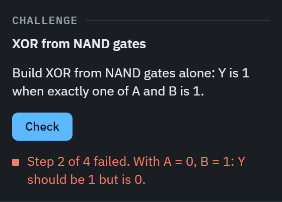

Build computers from their very first pulse.
A digital logic sandbox in your browser. Wire gates and flip-flops into adders, counters and registers, then program the 8-bit CPU it ships with.
Pre-alpha, free and open source. Nothing you build is uploaded. The editor is built for a desktop browser with a mouse.

Try a half adder
An XOR gate gives the sum and an AND gate the carry. Switch A or B on, and every wire and LED follows.

From one gate to a computer
Each layer below uses the parts of the ones before it. The reference CPU is made of nothing but these parts, and the challenges have you build its adder, registers, counter and ALU yourself.
Every circuit in Figs. 2 to 5 is under Examples in the editor, with notes on what to try.
Gates and wires
Place switches, gates and LEDs, drag wires between their ports, and the circuit updates as you build it. Then fold what you built into a part of its own.
Parts. Switches, LEDs, NOT, AND, NAND, OR, NOR, XOR and XNOR, splitters, mergers and net labels.
Components. Label the switches and LEDs that will be its pins, select the circuit, and choose Make component in the inspector; it gets a sheet of its own. Fig. 3 is one full adder, placed four times. Add components, in the Chips panel, copies components from an example, your library or an exported file.
Buses. A wire can carry up to 32 bits. It is drawn thick, with a slash for its width; hover it to read its value in hex.
-
1High: lit, and slightly thicker. -
0Low: grey and thin. -
/8A bus: one colour whatever it carries.


Time
Flip-flops and registers hold a value and change it only on a rising edge, when the clock goes from 0 to 1. Step a design one cycle at a time and see what each edge did.
Run and step. Seven speeds, from 1 Hz to follow by eye to 10,000 Hz for a game. The Until menu stops the clock when an LED you choose lights, so you can wire your own breakpoints.
Waveforms. Watch up to 16 wires. The panel under the canvas draws their latest cycles; click in it to place a cursor and read every watched wire at that tick; Left and Right move it.
Memory and devices. A clock, D flip-flops, registers, ROM and RAM up to 32 bits wide, a keyboard, seven-segment digits and a pixel screen.


A computer
Clockyard ships an 8-bit reference CPU, built from the same parts you have. Select its ROM or RAM to read every word, hover a bus to read its value, and open a register or multiplexer to see the gates inside. You can change it as you would your own circuit. Its tests run the circuit beside a model of its specification and compare the two after every clock cycle.
- Data
- 8 bitsAccumulator
Aand outputOUT;ZandCare 1-bit flags - Program
- 256 wordsof 16 bits each, in ROM addressed by
PC - Memory
- 240 bytesof RAM, at
0x00to0xEF; the top 16 addresses go to devices - Timing
- 2 cyclesper instruction: fetch, then execute
- Instructions
NOPLDILDASTAADDSUBADISBIJMPJZJCOUTHLT- Devices
- Four of those addresses are used:
KEYat0xFF, the key held;SPTRat0xFEandSDATAat0xFDfor the screen;HEXat0xFCfor the two hex digits.

- Screen
- Keyboard and hex digits
- Program ROM
- Program counter
- Control ROM and decoding
- Data RAM
- ALU
- Accumulator
- Zero and carry flags
- I/O read bus
- Output register
- Fetch and halt state
- I/O address decoder
Programs
Select the program ROM and write assembly in its inspector. Assemble fills the ROM and resets the circuit; a mistake is listed by its line and changes nothing.
To play Catch: open the CPU with Catch, set the speed to 10,000 Hz, press Run, click the keyboard part, then hold Left or Right. Blocks fall in eight lanes. Each catch up to the tenth makes the next block fall faster, and a miss ends the game; Reset starts a new one. The whole game is 89 instructions.

Challenges
Nine challenges climb from an inverter to the ALU the CPU needs. Each asks for a component with named pins, and Check runs it on a test bench inside the engine, and any circuit built from the allowed parts that behaves correctly passes. When one fails, you see which step failed, the inputs it set, and which outputs were wrong.
- InverterParts: NAND only
- XORParts: NAND only
- Half adderParts: gates
- Full adderParts: gates
- 8-bit adderParts: gates, splitters, mergers, a full adder
- One-bit registerParts: gates, D flip-flops
- 8-bit registerParts: gates, D flip-flops, splitters, mergers
- 8-bit counterParts: gates, D flip-flops, splitters, mergers
- ALUParts: gates, splitters, mergers, an 8-bit adder
Under each name, the parts it allows. A rung turns green here once you pass it in this browser. Open them from Challenges in the editor's parts panel. The CPU's own ALU is block 7 of Fig. 5.



One engine decides every wire
The engine is written in Rust and runs beside the page in a worker. The editor only draws what it reports, and a CPU you build runs through the parts and wires you placed.
To the worker: the circuit, your commands
To the page: values, diagnostics
Web WorkerWires name the ports they join. Nothing is inferred from where things sit, and two wires that cross are not connected unless they meet at a junction.
Settling is bounded. After any change the engine updates the wires until nothing moves, within a step limit that grows with the size of the circuit. A loop that never settles is reported as unstable and the run pauses, instead of hanging the page.
Runs repeat exactly. The same circuit and the same inputs, at the same cycles, give the same result at any speed or frame rate.


Yours, in your browser
Clockyard is a static site, free and open source under MIT or Apache-2.0. There is no account and no backend, and nothing you build is uploaded.
Your circuits are kept in this browser as projects and saved as you work. Clearing this site's data deletes them, so export what you want to keep as a JSON file. Files exported by earlier versions of Clockyard still open.
Copy link copies an address that carries the whole circuit after its #. Browsers
never send that part to a server, so whoever opens the link gets the circuit straight from it.
Where it stands
- Done: Phase 0The Rust engine in the browser through WebAssembly
- Done: Phase 1First circuit editor: gates, wires, export and import
- Done: Phase 2Components, junctions, routing, buses, net labels
- Done: Phase 3Clocks, flip-flops, run and step
- Done: Phase 4A programmable 8-bit computer and its assembler
- Done: Phase 5The sandbox: devices, a game, links, challenges, waveforms, examples, components from other files
- In progress: Phase 6Projects saved in the browser, autosave, a component library, challenge progress, and benchmarks run natively and in the browser
Pre-alpha, as of November 2026. A filled dot is done; a ring is in progress. Phase 6 continues with speed-ups where the benchmarks show the need, editing a running circuit, challenges for the CPU, four-state signals and a second CPU. The roadmap has the details.
Start with one gate
On your first visit the editor opens on an empty sheet. Press S for a switch, A for an AND gate and L for an LED, click to place each, then drag between their ports.
Then try the challenges, and open the CPU from Examples when you want to see where they lead.
Or run it from source
git clone https://github.com/josep-audenis/clockyard
cd clockyard
pnpm install
pnpm devThen open http://localhost:5173. It needs Node.js 22.13 or later, pnpm 10, a Rust toolchain with the wasm32-unknown-unknown target, and wasm-bindgen-cli 0.2.130; the README has the details.